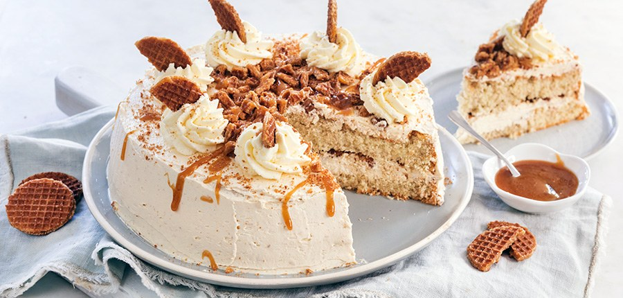

Stroopwafeltaart

Ingrediënten
- 10 personen
- 250 gr boter
- 200 gr poedersuiker
- 1 eetlepel heet water
- 125 gr zachte fudge
- 200 gr mini stroopwafels
- 100 ml slagroom
- 0.5 zakje slagroomversteviger
Biscuittaart
- snufje zout
- snuf kaneel
- 1 zakje vanillesuiker
- 20 gr maïzena
- 120 gr bloem
- 4 eieren
- 125 gr suiker
Benodigdheden
- spuitzak
- Bakpapier
- mixer
- Bakvorm 23 cm
Bereiding
- Verwarm de oven op 140 graden. Bekleed de onderkant van de springvorm met bakpapier. Vet de gehele vorm in en bestuif met een beetje bloem.
- Leg de eieren van te voren even in warm water (niet te heet) en mix ze daarna samen met de suiker, vanillesuiker 10 minuten luchtig en schuimig. Zeef de bloem, maïzena en een snufje zout erbij en spatel deze met een houten lepel of spatel er luchtig doorheen. Voeg ook het snufje kaneel toe. Giet of schep het beslag in de springvorm en zet niet te hoog in de oven. Verwarm nu de oven naar 175 graden en bak de biscuittaart in ca 35 minuten gaar. Let op dat hij niet te donker wordt.
- Laat ondertussen de blokken fudge au bain marie smelten. Dit kan even (15 min) duren. Mix de boter romig met een mixer en voeg het poedersuiker en een eetlepel heet water toe. Mix tot een luchtige en lichte massa. Mix dan ⅔ deel van de gesmolten fudge (karamel) er door. Zet de karamel botercrème in de koelkast (haal hem een half uur voor gebruik er weer uit).
- Als de biscuittaart klaar is laat je hem geheel afkoelen. Snijd hem door de lengte doormidden. Besmeer de onderste helft met ca. ⅓ deel van de karamel botercreme. Hak de stroopwafeltjes fijn (bewaar er een paar voor de garnering) en verdeel de helft over de botercrème en druk iets aan.
- Leg de bovenzijde van de biscuittaart er op en besmeer ook de randen en de bovenzijde van de taart met de botercrème. Je kunt deze met een iets warme spatel of paletmes mooi strak en egaal maken. Bestrooi de bovenzijde met de rest van de stukjes stroopwafel, houd de randen redelijk vrij.
- Klop de slagroom met de versteviger stijf. Doe in een spuitzak en maak toefjes op de taart. Steek hier een half overgebleven stroopwafeltje in. Besprenkel met de rest van de overgebleven karamel (warm deze weer een beetje op als hij hard is geworden).
- Tip: bewaar de stroopwafeltaart afgedekt op een koele plek. Zo nodig in de koelkast maar dan kan de cake iets uitdrogen, haal hem dan een uur voor het serveren er uit.